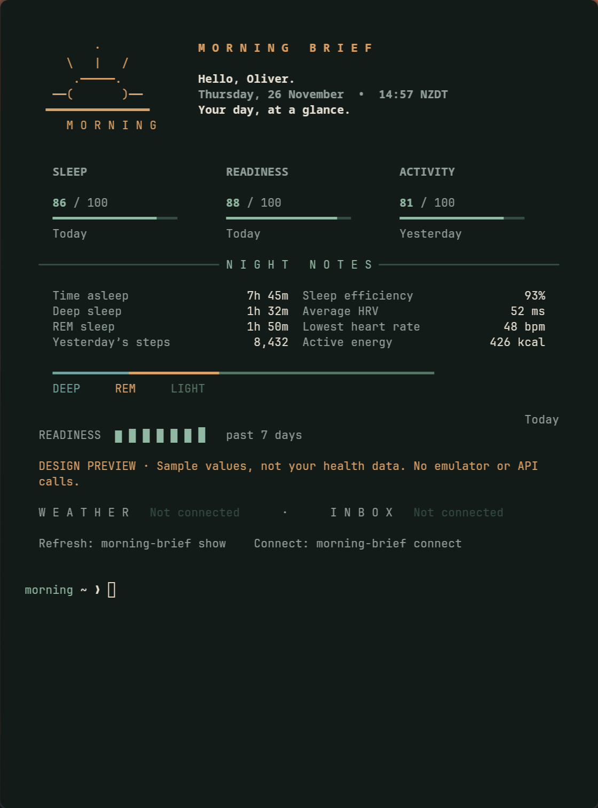

A QUIETER START
Your day,
at a glance.
Morning Brief is a personal Linux terminal dashboard that brings Oura sleep, readiness and activity summaries into a calm morning view. A transparent, widget-style layout lives above a fully usable shell.
Duration, stages, efficiency and overnight metrics.
Your daily score and recent trend, clearly dated.
Direct Oura API access. No project-operated health-data server.
In the terminal

Actual terminal screenshot, using labelled sample data—not live Oura records. An opaque background is used here for readability and desktop privacy; the installed widget supports transparency.
How it works
Connect your own Oura account through OAuth. The app requests the daily permission and fetches summaries directly from Oura Cloud. Credentials and cached records stay on your computer. The website never receives them.
The personal morning workflow starts on first active use after 3 a.m. A separately configured Android emulator can sync the ring before the dashboard opens. Missing or stale cloud data is labelled rather than presented as current.
This is an independent personal project, not an official Oura product or a medical device. Oura membership is required for Gen3/newer API access. Live account authorization remains to be verified; weather and email are planned, not current features.
Get started
Installation, source code and OAuth registration instructions are in the repository README. Each installation uses its own registered Oura application; no shared client secret is distributed.
python -m brief connect python -m brief terminal